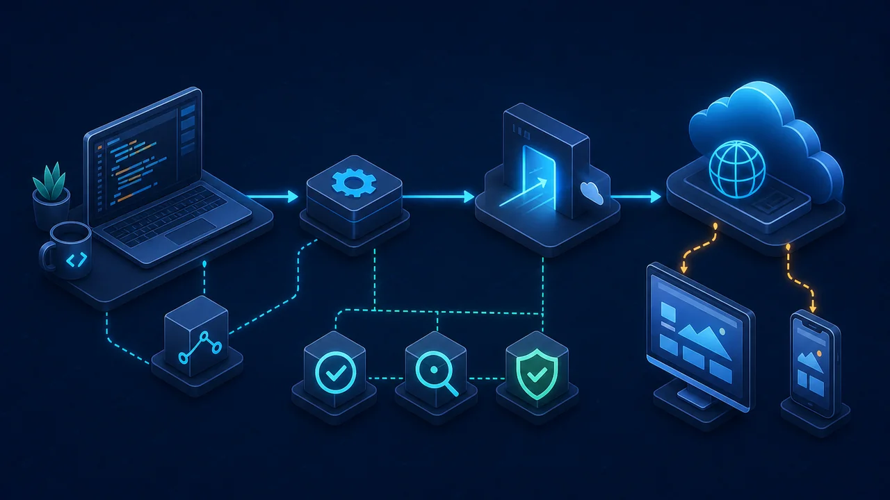
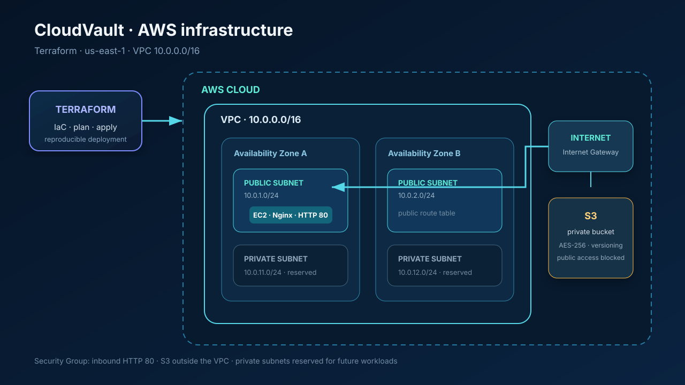
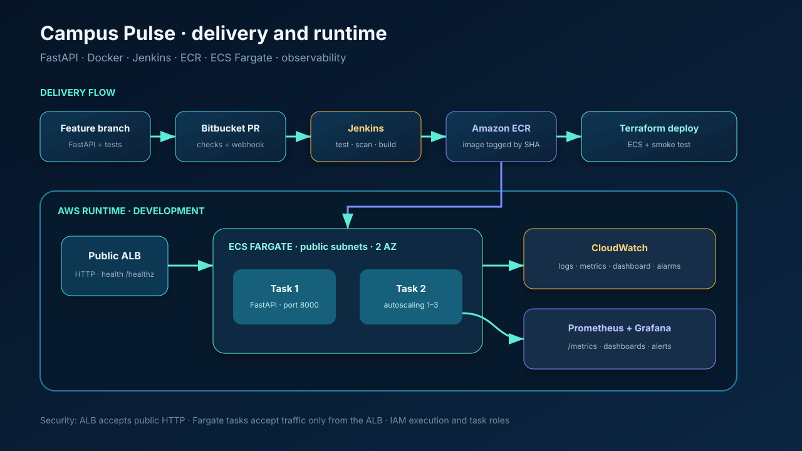
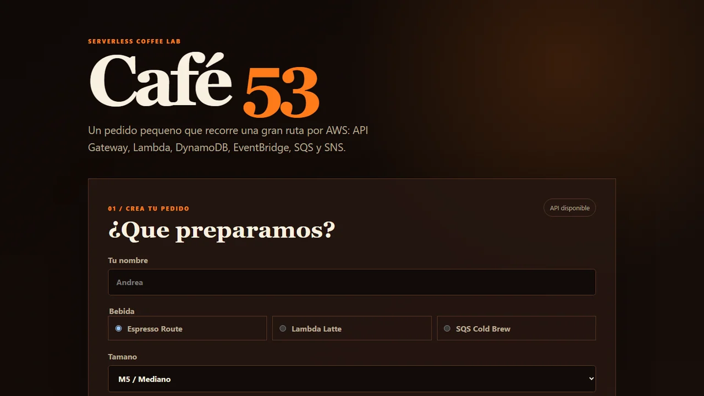
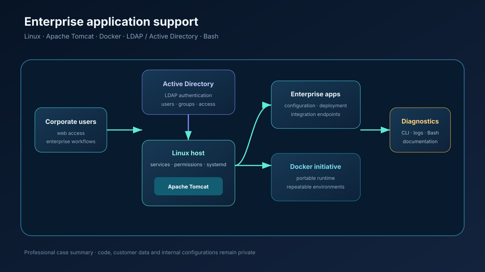
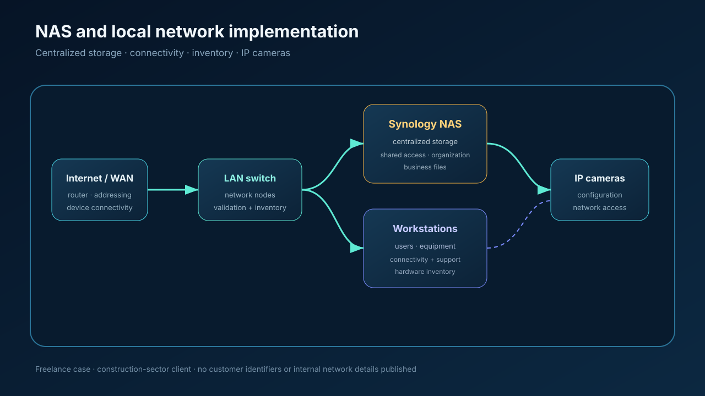

Formación concluida
Ingeniería en Ciencias de la Computación
Titulado por la BUAP, con formación en sistemas, redes, software y resolución estructurada de problemas.
Titulado · Ingeniería, sistemas y nube
Soy Andrés, ingeniero titulado con experiencia práctica en integraciones basadas en APIs, administración Linux, despliegues empresariales, Active Directory, Docker y automatización operativa. Desarrollo proyectos con AWS y Terraform para convertir mis fundamentos cloud en evidencia reproducible.
Trayectoria
Una base profesional en sistemas e integraciones, complementada con proyectos verificables de infraestructura y nube.
Formación concluida
Titulado por la BUAP, con formación en sistemas, redes, software y resolución estructurada de problemas.
Experiencia empresarial
Trabajo con APIs, aplicaciones empresariales, Linux, Apache Tomcat, logs, línea de comandos y flujos de autenticación LDAP/Active Directory.
Práctica aplicada
Experiencia con Docker, Bash, despliegues, soporte de redes y una implementación NAS, reforzada con laboratorios públicos de AWS y Terraform.
Stack técnico
Tecnologías que he utilizado en experiencia profesional y proyectos personales, indicando con claridad el nivel de práctica.
Enfoque principal
Servicios fundamentales, arquitectura, seguridad y operación en la nube.
En práctica
Infraestructura declarativa, modularidad, estado y flujos reproducibles.
Experiencia aplicada
Administración, terminal, permisos y automatización de tareas operativas.
Automatización
Scripts legibles para automatizar procesos y conectar herramientas.
Experiencia profesional
Validación, diagnóstico y documentación de integraciones entre sistemas.
Experiencia práctica
Entornos portables, imágenes pequeñas y ejecución consistente.
Trabajo verificable
Cuatro proyectos públicos y dos casos profesionales privados. En estos últimos se describe el alcance sin publicar código, configuraciones ni datos de clientes.

HTML · CSS · JavaScript
Sitio responsive, accesible y sin framework, con modo claro/oscuro, navegación móvil y metadatos preparados para compartir.

AWS · Terraform
Infraestructura reproducible con VPC en dos zonas, subredes públicas y privadas, EC2 con Nginx y S3 cifrado, versionado y sin acceso público.
Ver repositorio
Cloud · DevOps · Observabilidad
Laboratorio SaaS educativo con API instrumentada, contenedores, CI/CD, infraestructura para ECS Fargate, manifiestos Kubernetes y observabilidad.
Ver repositorio
AWS Serverless · Terraform
Aplicación desplegada con API Gateway, Lambda, DynamoDB, EventBridge, SQS/DLQ, SNS, CloudFront, observabilidad y alertas de costo.

Linux · Docker · Integraciones
Apoyo en despliegue y diagnóstico de aplicaciones sobre Linux y Tomcat, iniciativas de contenerización con Docker y análisis de autenticación LDAP/Active Directory mediante configuración, servicios y logs.
Código y configuraciones no públicos por confidencialidad empresarial.

Infraestructura · Redes · Almacenamiento
Implementación de almacenamiento centralizado con NAS Synology, validación de nodos y conectividad, inventario de equipos y soporte a cámaras IP para un cliente del sector construcción.
Caso resumido sin información sensible del cliente.
Contacto
Estoy abierto a oportunidades en integraciones, sistemas, infraestructura y cloud donde pueda aportar experiencia práctica y seguir creciendo técnicamente.